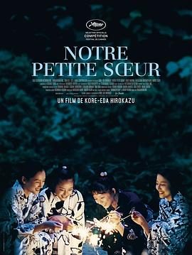

海街日记 / 海街diary
又名：海街女孩日记(港) / Kamakura Diary / Umimachi Diary / Our Little Sister
作品信息
| 导演 | 是枝裕和 |
| 编剧 | 是枝裕和 / 吉田秋生 |
| 主演 | 绫濑遥 / 长泽雅美 / 夏帆 / 广濑铃 / 大竹忍 / 堤真一 / 加濑亮 / 风吹淳 / 中川雅也 / 前田旺志郎 / 铃木亮平 / 坂口健太郎 / 树木希林 |
| 类型 | 剧情 / 家庭 |
| 制片国家/地区 | 日本 |
| 语言 | 日语 |
| 上映日期 | 2015-05-14(戛纳电影节) / 2015-06-13(日本) |
| 片长 | 127分钟 |
| IMDb | tt3756788 |
最后一次看到是 2026-08-12T21:12:07+08:00 · 豆瓣原页